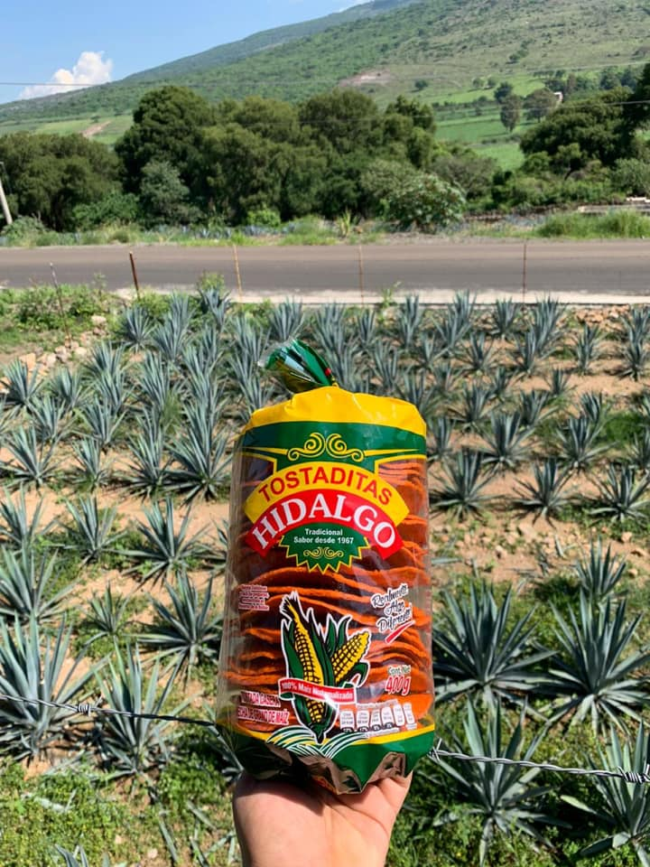

Nuestra Historia
Tostadas Hidalgo nació en el corazón de Monterrey como un pequeño negocio familiar en 1985. Lo que comenzó como un sueño por compartir el auténtico sabor del maíz, se ha convertido en una tradición que perdura generación tras generación.
Nuestra misión siempre ha sido la misma: llevar a tu hogar un producto de calidad inigualable, hecho con los mejores ingredientes y el mismo cariño de siempre.

Misión y Compromiso
"Nuestro compromiso es mantener la tradición y el sabor que nos caracteriza. En cada paso del proceso, desde la selección cuidadosa de cada grano de maíz hasta el horneado perfecto, ponemos toda nuestra dedicación para asegurar que cada tostada sea perfectamente crujiente."
¿Por qué nos eligen?
Selección
Elegimos el mejor maíz de la región para garantizar calidad desde el origen.
Nixtamalización
Proceso tradicional que resalta el sabor auténtico y los nutrientes.
Calidad
Horneado y freído perfecto para lograr ese crujido inigualable.